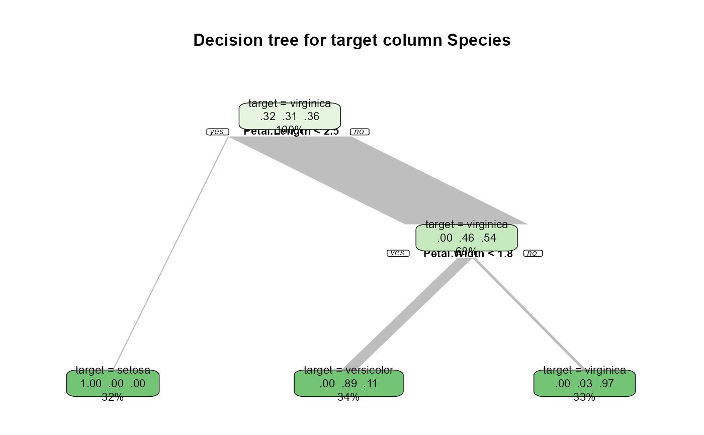
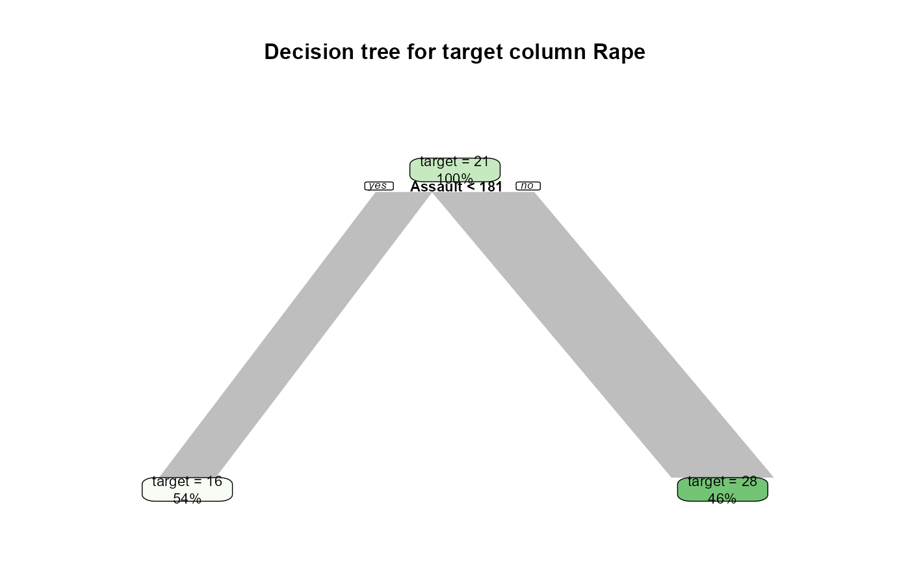

R/decision_tree.R
decision_tree.Rddecision_tree`()` Builds decision tree on given data. Returns metrics for the tree and optionally plots the tree.
decision_tree(
df,
target = NULL,
variables = colnames(df),
classification = TRUE,
showplot = TRUE,
maxdepth = 10,
minsplit = 20,
cp = 0.01,
xval = 5,
seed = 44
)Data frame.
Column name which values function predicts. By default the last column
column names of given dataframe to process. By default all colnames of dataframe.
If `TRUE`, function builds classification tree, builds regression tree otherwise. If building regression tree and target column is not numeric, casting the column to numeric values. `TRUE` by default.
If `TRUE` displays decision tree with plot function from rpart.plot package. By default `TRUE`
Maximum depth of decision tree. Default value is `10`
The minimum number of observations that must exist in a node in order for a split to be attempted. Default value is `20`
Complexity parameter. Any split that does not decrease the overall lack of fit by a factor of cp is not attempted. The main role of this parameter is to save computing time by pruning off splits that are obviously not worthwhile. Essentially, the user informs the program that any split which does not improve the fit by cp will likely be pruned off by cross-validation, and that hence the program need not pursue it. Default value is `0.01`
Number of cross-validation. Default value is `5`
Random seed, provides repeatability for the tree output. By default `44`
returns a list with calculated metrics for the given predictions and support - number of observations in test and train dataset. These dataframes are splitted using `sample.int` function, using 70/30 proportion. Calculated metrics are:, for classification problem accuracy and balanced accuracy, for regression - RMSE.
library("toRpEDA")
decision_tree(iris, target = "Species")

#> $train_support
#> [1] 105
#>
#> $test_support
#> [1] 45
#>
#> $accuracy
#> [1] 0.9777778
#>
#> $balanced_accuracy
#> [1] 0.9814815
#>
decision_tree(USArrests, classification = FALSE)
#> set target value to Rape

#> $train_support
#> [1] 35
#>
#> $test_support
#> [1] 15
#>
#> $RMSE
#> [1] 52.99113
#>